Mark Elster
Historic reflections 6-2
The itinerary, day 6, part 2
"Italian voices softly filling the air as wartime big band music echoed off the rain–soaked façades. I'm in heaven, joyous and a bit teary–eyed, church bells ringing… for real." As the sun starts to peak out, raising steam off the cobbles more people poke their heads out to smoke and shop as In the Mood wafts across the square. "A family with a stroller and two little boys come by, one straining at his father's grip mischievously stomps in the puddles…papa not happy about it, until he sees me a moment later smiling at his boys; and I gesture that I love their energy…and he finally laughs."
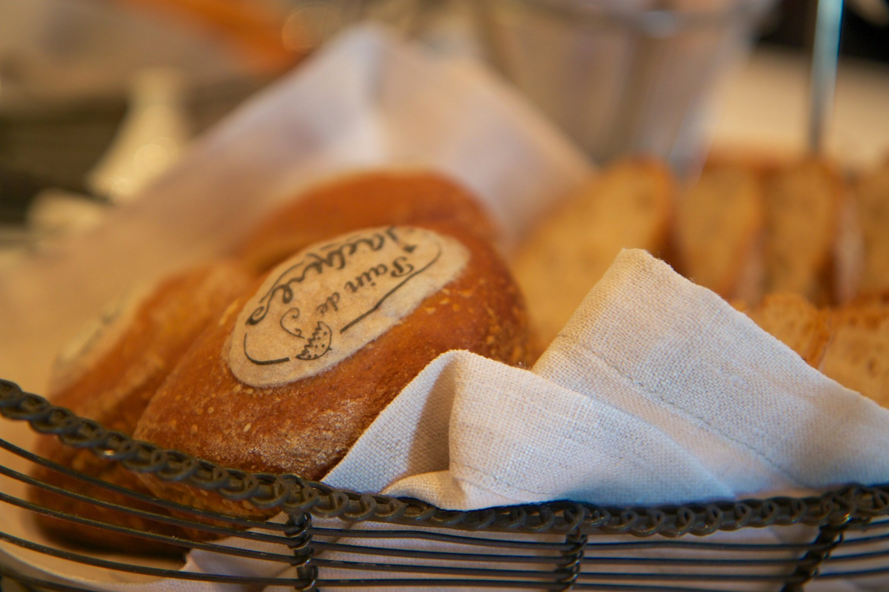
Rejoining NancyEllen the three of us visited several shops, picked up limoncello and meloncello and a dainty lace parasol that turned her fancy.
Amalfi
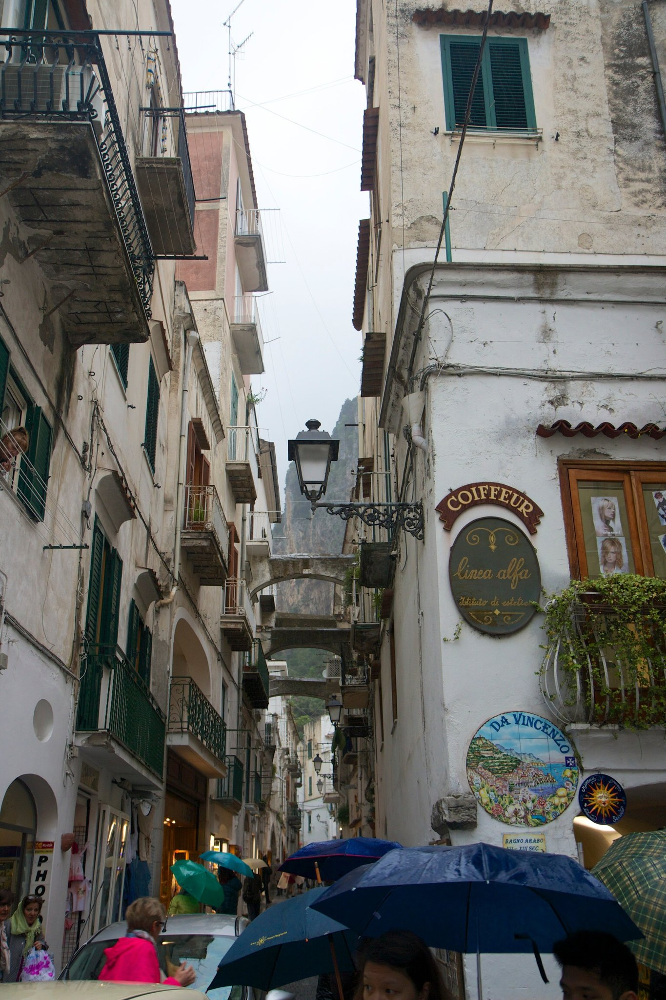
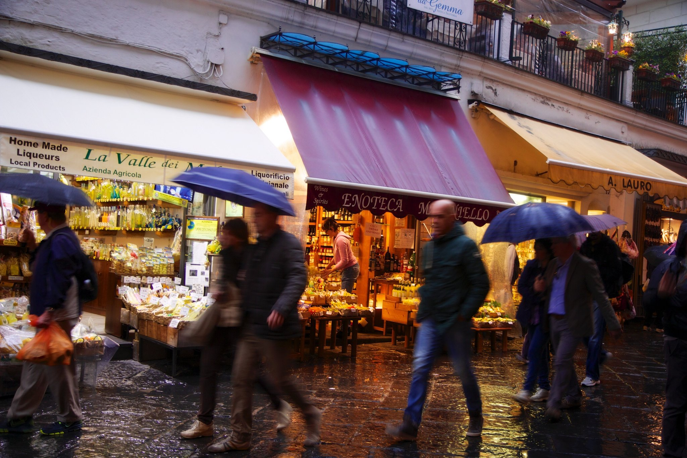
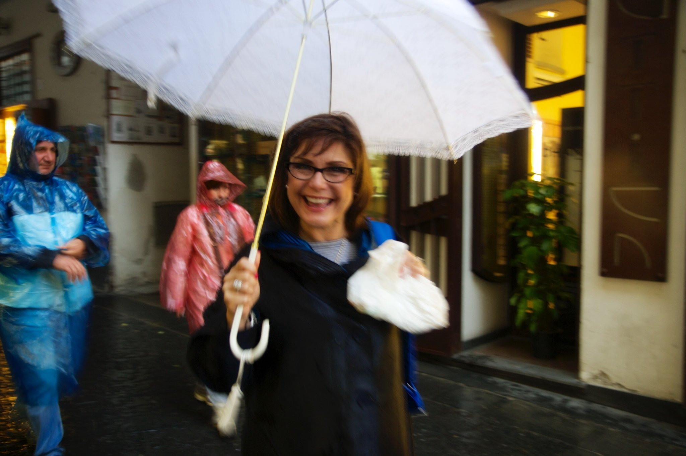
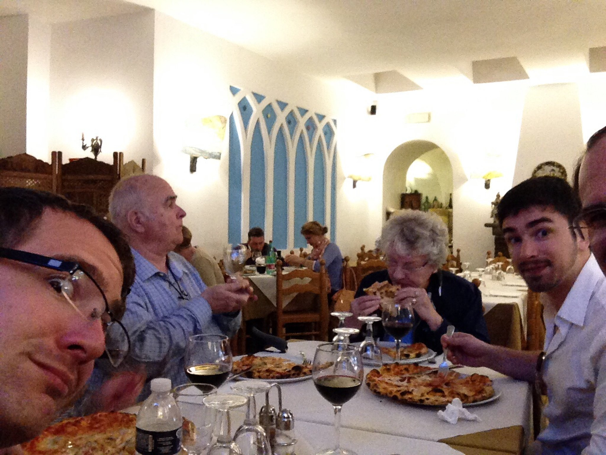
As dusk began to fall and the rain picked up yet again we darted onto the tender and back to our home away from home–looking forward to dinner all together at Jaques Dining room aboard our ship.
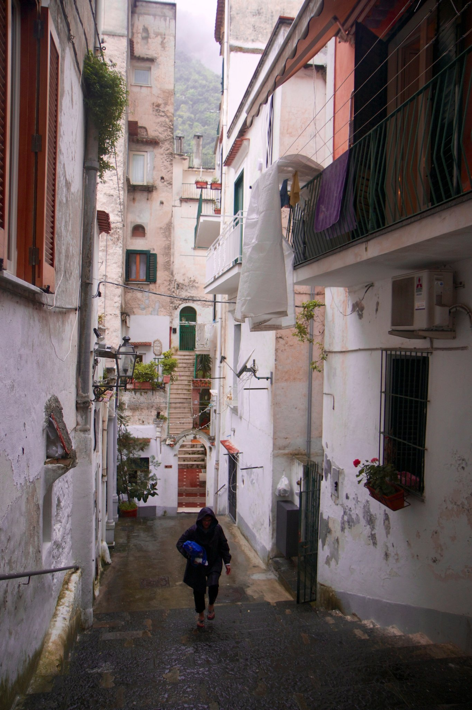
Jaques dining room—delectable
As we enter along the sweep of windows featuring the receding coastline of beautiful Amalfi, we are greeted by a receiving line of the staff that will serve us that evening— their tradition as the first guests arrive, a detail we would have missed if we hadn't made our reservations early all those months ago.
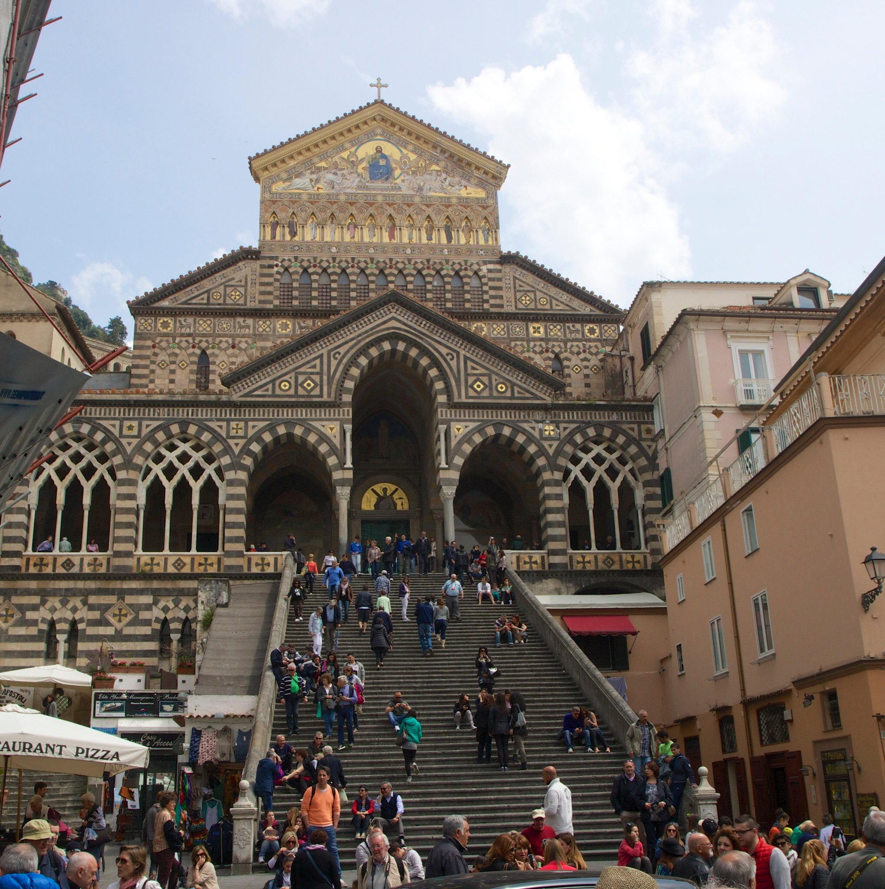

Returning from Ravelo to coastal Amalfi on a somewhat different, quicker, less picturesque track, left the afternoon to explore this quaint village of about 2,500 residents that would give class–action ADA attorneys fits. Not a single building, literally, not one in the whole community would pass accessibility standards in the USA. And yet it all works splendidly! And the people are clearly quite content.
As it rained off and on we darted down narrow passages and tiny walkways clamoring between buildings and back down the principal street bisecting the town, where we met up with mom and dad for a late lunch of pizza and pasta, and Amalfi lemons (we were gifted with 4 huge ones by the chef on our way out).
As it rained off and on we darted down narrow passages and tiny walkways clamoring between buildings and back down the principal street bisecting the town, where we met up with mom and dad for a late lunch of pizza and pasta, and Amalfi lemons (we were gifted with 4 huge ones by the chef on our way out).
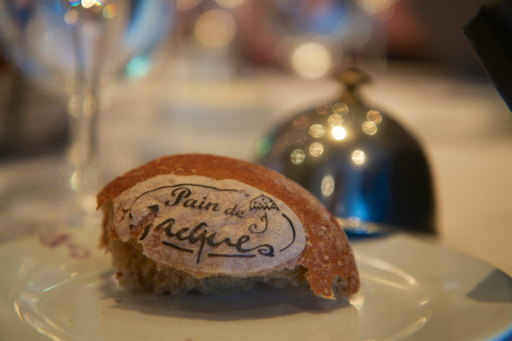
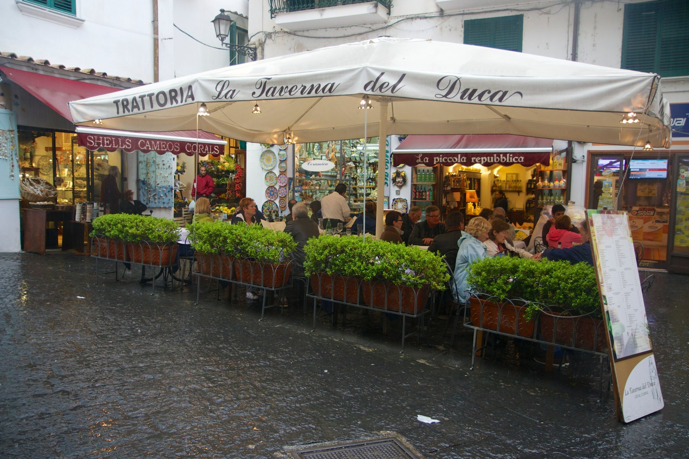
The dinner is scrumptious and presented with flare (several servings are finished table side).
While NancyEllen sat in the main square people–watching and sipping a latte; and grandparents and Christoff returned to the ship exhausted; Gavin and I elected to visit the cathedral. Very different than expected— we were startled at the span of history it represented and how unexpectedly sumptuous it is!
NancyEllen, rejoicing in a few moments of reverie on the square sitting alone at the café, jots down her thoughts in her travel journal…
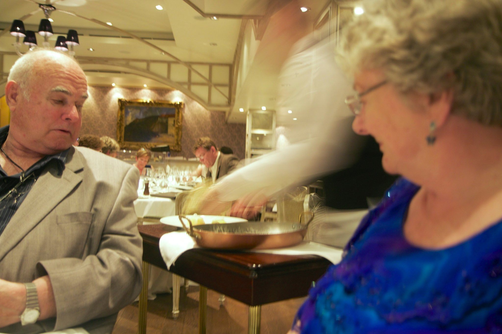
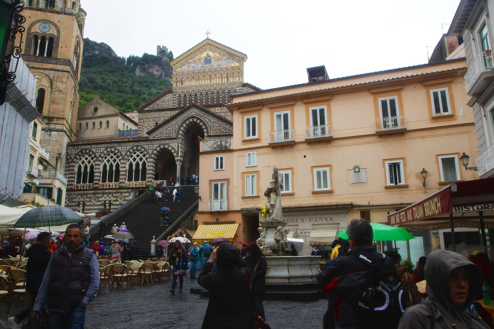
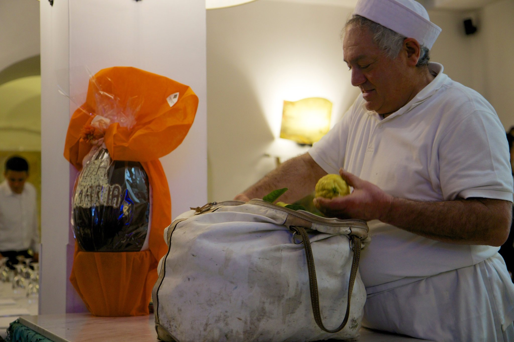
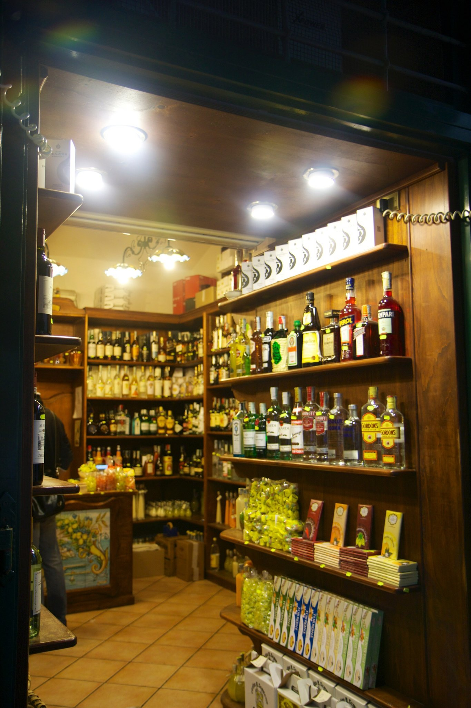